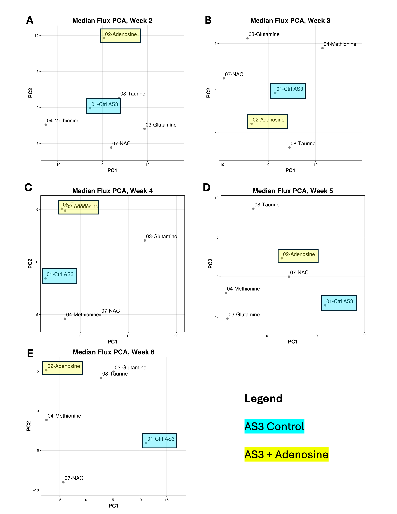
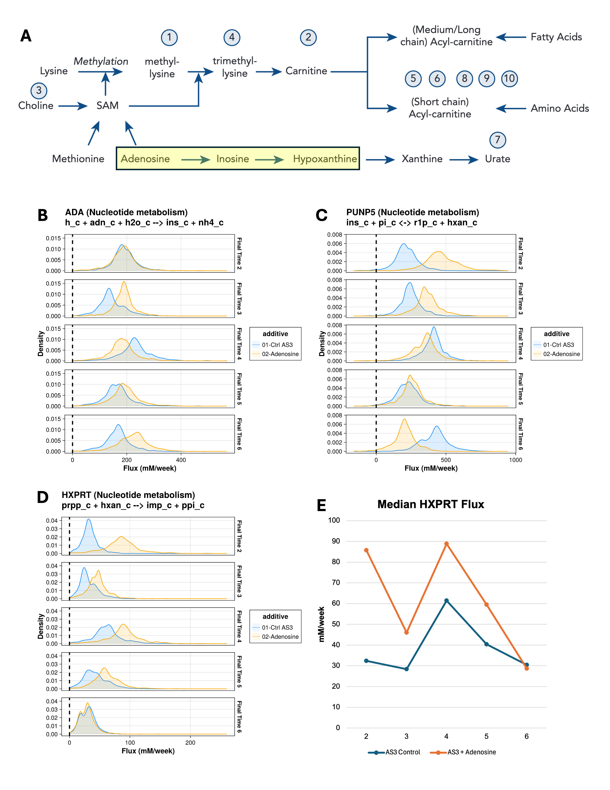

This may become a preprint in the future. It is here so potential employers can see it in the meantime.
Alicia M. Key, Travis Nemkov, Zachary Haiman, Bernhard Palsson, and Angelo D’Alessandro
Abstract
Red blood cells (RBCs) undergo progressive metabolic changes during refrigerated storage (called the “storage lesion”) that can compromise RBC quality and transfusion outcomes. Supplementation of storage solutions with metabolic additives may mitigate aspects of this storage lesion, but identifying the impact on reaction fluxes resulting from supplementation remains challenging. Here, we present a computational framework integrating time-course metabolomics with unsteady flux balance analysis (uFBA) to characterize feasible metabolic flux distributions in RBCs stored under different additive conditions. Relative metabolomics measurements were combined with independently obtained absolute metabolite concentrations to estimate concentration changes over time. These estimates constrained 30 condition-specific metabolic models representing five weekly storage intervals and six conditions: standard AS-3 and AS-3 supplemented with adenosine, glutamine, methionine, N-acetylcysteine, or taurine. Each model comprised 127 reactions and was analyzed using constraint-based optimization and artificially centered hit-and-run (ACHR) flux sampling. Principal component analysis (PCA) of median reaction fluxes revealed differences among additive conditions and highlighted contributions from nucleotide and carbohydrate metabolism across storage intervals. Pathway-level analysis identified elevated predicted hypoxanthine phosphoribosyltransferase flux in adenosine-supplemented RBCs during storage intervals ending at weeks 2–5 relative to AS-3 control, suggesting altered purine salvage activity. Because model constraints were derived partly from estimated rather than directly measured absolute concentrations, these results represent qualitative computational hypotheses rather than validated quantitative flux predictions. This framework demonstrates the potential of integrating metabolomics and flux-space sampling to investigate metabolic interventions during RBC storage.
Introduction
Red blood cells from different donors store differently in multiple ways. First, RBCs accumulate morphological and metabolic damage called the “storage lesion” while in storage awaiting transfusion and this storage lesion makes the outcome of some transfusions worse than others.1-4 Second, this storage lesion is observed, in part, as the time courses of metabolite abundances found in units of RBCs from different donors as metabolite abundances display different trends throughout storage.5-7 Third, several of these metabolite abundance changes appear to arise from differences in donor biology such as age, sex, body mass index (BMI), and single nucleotide polymorphisms (SNPs) in their genomes.8,9 Given this landscape of metabolic differences and their impact on transfusion outcomes, are there metabolic interventions that could benefit RBC storage? In a study regarding deliberate supplementation of stored RBCs in a mouse model with L-carnitine, it was found this boosted the abundance of acyl carnitines available to the Lands cycle that repairs oxidative damage to the RBC membrane.10 In this paper, by combining experimental and in silico approaches as mentioned in below, I aim to show that a combination of experiments and computation hold the potential to find more beneficial additives for RBC storage.
This paper presents an in-silico modeling method that takes experimentally estimated metabolite concentrations in RBCs stored in differing additive solution conditions ranging from pure AS-3 (control) to AS-3 supplemented with additional compounds (treatments.) The in-silico method used is unsteady flux balance analysis (uFBA), a constraint-based modeling approach that quantifies plausible flux distributions at discrete time points in a metabolic network using experimentally derived data.11 Using uFBA, flux changes in the presence of different AS-3 supplements over storage duration were modeled as described in this paper. Taken together, these are predicted feasible flux behaviors that can be further used as model-driven hypotheses about metabolic states of the RBCs in AS-3 with different supplements. While fluxes are not direct metabolite concentration measurements, they do reflect beneficial or detrimental changes to the metabolic network. We implemented a model using techniques described below to generate plausible flux distributions according to the methods of this paper.
The main experimental data for this paper comes from a relative quantification metabolomics study from Nemkov and colleagues in 2022.12 The first innovation of the 2022 experimental study was revealing that refrigerated RBC storage on 96-well plates showed similar trajectories to RBCs stored in plastic blood bags. This 96-well storage format enabled the design of an experiment using high throughput metabolomics techniques. This facilitated a study that compared the time courses of metabolite abundances in RBCs stored in pure AS-3 (the control) alongside RBCs stored in AS-3 plus an additional supplement. Treatments that were compared were pure AS-3 versus AS-3 mixed with adenosine, methionine, N-acetyl cysteine (NAC), taurine, and glutamine.12 While the experimental intricacies of how these data were gathered is beyond the scope of this paper, more information on how these data were preprocessed and incorporated in unsteady flux balance analysis is in the methods section of this paper.
To understand why uFBA was chosen as the method for in silico modeling, we can start by reviewing the underlying constraint-based modeling method of flux balance analysis (FBA). Traditional flux balance analysis and flux sampling reveal allowable fluxes throughout a metabolic network under the steady-state assumption that metabolite concentrations do not change.13-16 While this steady-state assumption is adequate for models wherein metabolite concentration changes are not relevant, the steady-state assumption is inadequate for modeling RBC storage because many of the metabolite concentrations in stored RBCs change over time. These metabolite concentration changes violate the steady-state assumption. This is where the unsteady flux balance analysis (uFBA) approach becomes useful. Instead of assuming metabolite concentrations remain constant, uFBA holds the rates of concentration change between maximum and minimum values and models changes to these minimums and maximums at discrete time intervals.11 In the data presented in this paper, the discrete time intervals correspond to metabolite abundances measured at weekly intervals. To establish the upper and lower bounds of concentration change rates, uFBA employs linear regression to model the slope of concentration versus time for each measured metabolite in each biological replicate across discrete time intervals. In this paper, these regressions are over time intervals 1 to 2, 2 to 3, 3 to 4, 4 to 5, and 5 to 6. I call these intervals time intervals 2, 3, 4, 5, and 6 respectively. The slope of the regression provides a point estimate of the concentration change; however, what is needed are bounds that this rate can plausibly exist within. To find the bounds, the upper and lower values of the 95% confidence interval around the slope define the upper and lower values of the metabolite constraints. While this regression approach offers upper and lower bounds for measured metabolites, unmeasured metabolites are relaxed to have non-zero bounds as well. For this paper, these relaxations are equal to negative and positive extremes of the minimum absolute values of the measured metabolites. When these metabolite estimates and relaxations are gathered into b1 and b2 vectors (upper and lower metabolite bounds) and flux directionality is encoded into flux constraints in vector v, we have the system of constraints in Equation 1 for uFBA. More details on how these constraints are made and used are in the methods section of this paper.
Equation 1
\[ \begin{aligned} \mathbf{S}\cdot\mathbf{v} &\ge \mathbf{b}_1 \\ \mathbf{S}\cdot\mathbf{v} &\le \mathbf{b}_2 \\ \mathbf{v}_{\min} &\le \mathbf{v} \le \mathbf{v}_{\max} \end{aligned} \]
Methods
The main computational pipeline has the following parts: (1) derive concentration-change estimates for selected metabolites from relative and absolute quantification data, (2) create constraints for uFBA models from these estimates, (3) artificially centered hit-and-run17 (ACHR, a flux sampling algorithm) examination of the feasible flux space, (4) statistical analyses, and (5) biological interpretation and publication figure generation. The project uses the Julia COBREXA.jl (Constraint-Based Reconstruction and Exascale Analysis) 18, JuMP.jl19, and HiGHS20 constraint-based optimization ecosystem for time performance over repeated iterations of computation-intensive steps 1, 2, 3, and 4. In addition to the source code, the repository contains extensive documentation focused on the technical details of implementation. This methods section provides a complementary explanation from a scientific perspective.
The main biological objective of this entire study is to compare U.S. industry-standard storage of human red blood cells (RBCs) in additive solution 3 (AS-3) to RBCs stored in AS-3 supplemented with compounds manually curated in prior non-computational studies. The main dataset is from a relative quantification (measurement of mass spectrum intensities) of RBCs stored in AS-3 (control) and AS-3 plus one of 5 single supplements/supplement concentrations (treatment conditions). These relative quantification measurements were taken at time intervals 1, 2, 3, 4, 5, and 6 (the final week of storage before FDA-mandated disposal). Constraining uFBA models requires absolute concentration measurements, not relative quantification. To bridge this gap, relative quantification fold changes for each metabolite within each storage condition were calculated, joined with a dataset of absolute quantification measurements (expressed in terms of mmol/L), with the final estimated absolute quantification being the relative fold change of a metabolite multiplied by the starting (day 0) absolute measurement of the same metabolite. Not all metabolites measured in the relative quantification study were present in absolute quantification study. Metabolites that were not present in both datasets were excluded from absolute quantification estimation. The result of the estimate were time courses of approximate absolute quantification for each included metabolite. Some metabolites were indistinguishable on the mass spectrum of the original relative quantification study, but the underlying RBC-GEM upon which the model was based needed measurements for each grouped metabolite separately. The next step of absolute quantification estimation proportionally allocated concentration to each metabolite (for example, a peak that mapped to 3 RBC-GEM metabolites would have 33% concentration attributed to each metabolite). Then, common English names of metabolites were mapped to RBC-GEM metabolite identifiers. There were 6 biological replicates for all relative quantification measurements. The output of this phase of analysis were concentration estimates, in units of mmol/L, for each RBC-GEM metabolite identifiers in each storage condition at each of the time intervals measured. Estimates of rates of concentration change (think estimating of dx/dt, where x is the vector of rates metabolite concentration changes) were calculated by linear regression of concentration vs time for each metabolite between adjacent timepoints. The resulting regressions gave confidence intervals (with lower and upper bounds) estimated rates for time intervals 1-2, 2-3, 3-4, 4-5, and 5-6. For the rest of this paper, each of these timepoints is referred to as the final time point (rates at time intervals 2, 3, 4, 5, and 6). This gave concentration rate estimates for 5 timepoints across 6 conditions (including pure AS-3 control) yielding a total of 30 sets of metabolite constraints, which correspond to 30 models sampled for the study.
With the concentration rates in hand, the next step was to build a model for sampling. This started with the RBC-GEM from Haiman, et al.21 The models for this study did not use the whole RBC-GEM; rather, a selection of reactions was pulled following a model from Bordbar et al and mapping old reaction ids to new ids in the current RBC-GEM.11 Loads for NADH (positive direction depletes NADH, accumulates NAD), NADPH (positive direction depletes NADPH and accumulates NADP), ATP (positive direction depletes ATP and accumulates ADP and Pi), and the sodium potassium pump were added. These loads were also the objectives of all models. For each of the 30 models, the starting configuration was:
- 130 metabolite ids (26 of which had concentration rate estimates)
- 127 reactions (63 of which incorporated one or more measured metabolites)
- 16 reaction subsystems (15 of which incorporated one or more measured metabolites)
- 6 categories of subsystems (all 6 incorporating one or more measured metabolites)
After the reactions and metabolites were selected, metabolite constraints were added. For metabolites with measurements the lower and upper bounds of the corresponding regressions were added as the lower and upper bounds for rates of concentration change. For unmeasured metabolites, the lower and upper rate bounds were relaxed between the negative and positive sides of the minimum absolute values taken across all measured metabolites. The intuition behind this relaxation is that unmeasured metabolites are assumed to accumulate or deplete at a rate within the bounds of the rate limiting step as found in the metabolite measurements.
At this point it is useful to reiterate the intent, scope, and caveats of this study because they are the context for the upcoming technical considerations to be described. The dataset used for this study was relative quantification time course metabolomics rather than the absolute quantification that is required. This makes this study a proof-of-concept to determine the value of this modeling approach to future experiments that are purely informed by absolute quantification metabolomics (more details on this are in the “Future Directions” section.) Following from this, the original relative quantification (in units of intensity, rather than the required units of mmol/L) of the RBC storage data, while comprehensive, was (1) performed before this paper’s modeling effort started and (2) was not designed expressly for this modeling purpose. The inclusion of a different absolute quantification study performed at yet another time and for yet another different purpose, helped create estimates of metabolite concentrations. But this assortment of experimental protocols and data collection strategies inherently leaves the metabolite-based constraints as estimates. This means the sampled data should be used as a qualitative guide for future bench experiments not as a guarantee of exact quantitative behavior. Therefore, to give the widest breadth of suggested experiments, the goal was to sample all 30 models. The resulting sets of constraints reflected the biological conditions of the model and additional technical feasibility adjustments were made to facilitate model sampling.
The first technical feasibility adjustment is found in the original uFBA methods paper. Each of the models must resolve both mass balance and metabolite constraints. This can potentially lead to models that are over constrained and that have no feasible solutions. One way around this is to place “sink” reactions into the model for unmeasured metabolites. The benefit of these sink reactions is to mathematically allow the optimizer to accumulate or deplete unmeasured metabolites at a rate that makes the model feasible. The downside is that adding sinks adds the opportunity to sample solutions that are mathematically feasible but biologically meaningless. To ameliorate this drawback, a separate sink pruning step happens before flux sampling. Essentially, sink pruning is a separate optimization problem (different than optimizing fluxes according to a biological objective) that seeks to find the minimal set of sinks required to make a model feasible. In this paper, we used Case 3 sink pruning (Equation 2) as described by Bordbar et al.11 Sinks that carry zero flux during this special optimization are removed prior to the final sampling. Ideally, the set of sinks for each model should be the same to ensure maximum comparability among all models; however, each independent condition required a different set of sinks for feasibility. This left two choices: (1) insert the union of sink sets into all models, which would give many models too many sinks or (2) define sets of sinks explicitly for each model and note that as a caveat in the analysis. In keeping with the spirit of delivering qualitative experimental guidance for the widest number of conditions with the best sampling possible per conditions, the second option of independent sink specification was chosen. Across models for treatments/time intervals, anywhere from 1 to 4 sinks remained after pruning. As a reference for the number of constraints that had to be satisfied, the model for AS-3 control had 136 flux constraints each specifying both lower and upper bounds of fluxes and 130 mass balance constraints each specifying lower and upper bounds of rate of metabolite concentration change.
Equation 2
\[ \min \left( \sum_{i=1}^{m} |\Delta x_i| + \sum_{j=1}^{n} |v_j| \right) \]
The second and third technical feasibility consideration was made possible by a quality control step in the pipeline. Prior to any optimization, constraints were individually given human-readable names, based on either a reaction id (for flux constraints) or a metabolite id (for mass balance constraints). If any constraints broke any optimization, these constraints were logged to a spreadsheet and pointed to input data that might be causing a problem. This enabled the second technical feasibility consideration: a spreadsheet with an opt-out list for problematic metabolite measurements. Metabolite measurements on this list were ignored, and the corresponding metabolite constraint was simply relaxed as if it were an unmeasured metabolite. The third technical feasibility consideration was a sink opt-in list that overrode pruning removal.
While the technical feasibility considerations introduced non-biological consideration to modeling, they were chosen to allow qualitative information from the greatest numbers of models to be extracted.
By sampling feasible flux distributions, rather than computing a single optimal flux vector, I obtained (1) uncertainty around feasible fluxes and (2) accounted for incomplete and noisy time course metabolomics data that single flux estimates would not reveal. To sample feasible flux distributions, the uFBA pipeline used three steps. First, after assembling the models with all reactions and possible sinks, each model had unneeded sinks pruned out. Second, a standard optimization with the selected sinks, reactions, and all constraints was performed. Third, the flux space was sampled with an ACHR algorithm.17 After each step, questions would be evaluated to ensure quality control and remove infeasible or poorly sampled models from downstream analysis. For the first and second steps, the question was “Were there any broken constraints in this optimization?” If there were broken constraints, these breaks were logged and the model was removed from downstream sampling and analysis. This was ultimately a debugging step and all 30 models sampled successfully in the analysis presented in this paper. For the sampling step, the question was “For all reactions, were the expected number of samples returned from the sampling function?” If the number of samples was less than expected, that was logged. At the end of sampling all 30 models, a uFBA sampling status spreadsheet was written with a summary of QC results and ultimate sampling status of the model.
The net result of all the uFBA modeling steps mentioned above was that all 30 models successfully completed all optimizations, with the expected number of samples for each reaction. This gave results for all five timepoints (time intervals 2, 3, 4, 5, and 6) for all 6 conditions. At this point, flux samples and median fluxes (per reaction, treatment, and timepoint) are saved as spreadsheets for all treatments that had all 5 timepoints completed successfully. I present an illustrative example of analyzing raw uFBA samples and their medians in Figure 2.
After the uFBA samples and their medians are computed, we performed post-sampling analysis. Of interest to Figure 1 and Table 1 of this paper is a principal components analysis of the standardized median fluxes (each flux was mean-centered and divided by its standard deviation) for each condition and time interval, to yield the plots in Figure 1 comparing the positions of the treatments at each time interval, which enables visual inspection of relative positions of condition to determine which conditions that stand out from the rest at each time interval. Further analysis of loadings on the first two principal components is in Table 1. First, I calculated the Euclidean norm of the loadings on PC1 and PC2 to aggregate the effects on the first two principal components pictured in Figure 1. The Euclidean norm is in Equation 3, where l1 and l2 are the values of the first two principal components. Then, I found the top 5 reactions (and their reaction categories) for each time interval based on the norms of their loadings. Further remarks on the PCAs and their loading are in the Results and Discussion section of this paper.
Equation 3
\[ L_i = \sqrt{\ell_1^2 + \ell_2^2} \]

Figure 1: A-E: Scatter plots of first two principal components of a PCA from a data matrix of median fluxes for all 127 reactions for each condition and storage time interval (noted by the ending week.) Note how adenosine prominently separates from the other additives and control in the first time interval. The effect of adenosine is explored more deeply in Figure 2 and the main text of this paper.
Table 1: Top reactions ranked by their Euclidean norm of their loadings on PC1 and PC2 alongside their reaction categories grouped by time interval. See Results and Discussion section for further interpretation.
| Time interval | Reaction Name | Metabolism Category | Norm of PCs |
|---|---|---|---|
| 2 | PGK Phosphoglycerate kinase | Carbohydrate | 0.170 |
| PUNP5 Purine-nucleoside phosphorylase (inosine) | Nucleotide | 0.157 | |
| GK1 Guanylate kinase (ATP:GMP) | Nucleotide | 0.156 | |
| PDEG 3’,5’-cyclic-nucleotide phosphodiesterase (cGMP) | Nucleotide | 0.156 | |
| GUACYC Guanylate cyclase | Nucleotide | 0.156 | |
| 3 | AMPTASECG L-cysteinylglycine dipeptidase | Other amino acids | 0.179 |
| NTDUMP 5’-nucleotidase (UMP) | Nucleotide | 0.169 | |
| PDEG 3’,5’-cyclic-nucleotide phosphodiesterase (cGMP) | Nucleotide | 0.168 | |
| NDPK1 Nucleoside-diphosphate kinase (ATP:GDP) | Nucleotide | 0.168 | |
| GK1 Guanylate kinase (ATP:GMP) | Nucleotide | 0.168 | |
| 4 | GLNS Glutamine synthetase | Amino acid | 0.187 |
| GAPD Glyceraldehyde-3-phosphate dehydrogenase | Carbohydrate | 0.180 | |
| LDH_L L-lactate dehydrogenase | Carbohydrate | 0.178 | |
| G6PDH2 Glucose 6-phosphate dehydrogenase | Carbohydrate | 0.167 | |
| PGL 6-phosphogluconolactonase | Carbohydrate | 0.167 | |
| 5 | FBA Fructose-bisphosphate aldolase | Carbohydrate | 0.189 |
| TPI Triose-phosphate isomerase | Carbohydrate | 0.189 | |
| NH4e Deprotonation of ammonium | Other, Transport, & Pseudoreactions | 0.173 | |
| PRPPS Phosphoribosylpyrophosphate synthetase | Carbohydrate | 0.171 | |
| PFK Phosphofructokinase | Carbohydrate | 0.170 | |
| 6 | DPGM Diphosphoglyceromutase | Carbohydrate | 0.165 |
| PGK Phosphoglycerate kinase | Carbohydrate | 0.163 | |
| GAPD Glyceraldehyde-3-phosphate dehydrogenase | Carbohydrate | 0.161 | |
| NDPK1 Nucleoside-diphosphate kinase (ATP:GDP) | Nucleotide | 0.157 | |
| GK1 Guanylate kinase (ATP:GMP) | Nucleotide | 0.157 |
Finally, to find paths of interest through the network of reactions, the post-sampling analysis pipeline creates an adjacency matrix data structure that describes a directed graph of reactions. Metabolites are nodes and reactions are the directed edges. Irreversible reactions have one edge in the direction of the reaction, whereas reversible reactions have edges in both directions. The post-sampling pipeline accepts a list of metabolite ids and maximum number of hops from those metabolite ids. From each metabolite id specified, a depth first traversal (DFS) path is indexed over the requested number of hops and saved to a spreadsheet. At the end of all the traversals, the spreadsheet contains paths that fan out from each metabolite of interest to describe the reactions that are traversed. For example, starting from adenosine as a metabolite of interest, a DFS traversal revealed the path between adenosine and hypoxanthine that the pathway discussed in the results section to be created.
Results
For each of the 30 models (6 additives times 5 time points), all reactions are sampled 1,270 times. Therefore, for each reaction, there is a plot like the ones Figure 2 B-D, where each condition/time interval/reaction have a density plot of feasible fluxes. While the complete density plots are necessary for the full picture of the fluxes each reaction is simulated to take, it is useful to summarize the distribution for each condition/time interval/reaction into a single value by taking the median of the distribution of samples. These median fluxes are then arranged into a data frame with columns for condition, time interval, and the median fluxes for each reaction. With this median flux data frame in hand, we performed a PCA to plot the first two principal components of the 127-dimensional median flux space onto a two-dimensional scatter plot, with one such plot for each time interval. See Figure 1 A-E. Each point and text label represents the position of a particular treatment during that time interval. Of note in Figure 1A, the adenosine treatment prominently stands out from the other treatments.
This is not the first time in this dissertation that adenosine has risen to prominence. Recall the carnitine pathway from Chapter III (reproduced in Figure 2A of this paper) had a pathway from adenosine to inosine to hypoxanthine. Since adenosine was important on the carnitine pathway and featured prominently separated from control on the Time interval 2 PCA in Figure 1A, we can look at the pathway of reactions spanned by these two metabolites to bring this paper and Chapter III together. First, note the relative flux rates for adenosine deaminase (Figure 2B, ADA, roughly between 0 and 400 mM/week), purine nucleoside phosphorylase (inosine) (Figure 2C, PUNP5, roughly between 0 and 600 mM/week), and hypoxanthine phosphoribosyltransferase (Figure 2D, HXPRT, roughly between 0 and 150 mM/week.) Differences in fluxes lead to accumulation or depletion of reactants or products that in turn affect the fluxes of the corresponding reactions. In this three-reaction pathway, the net result of the addition of adenosine to the RBCs is that the HXPRT reaction runs at a consistently higher flux during time intervals 2, 3, 4, and 5. In time interval 6, the HXPRT flux of adenosine coincides with that of the control. In other words, the model simulates turnover of hypoxanthine to IMP faster in the adenosine condition (Figure 2E.) While uFBA does not model the metabolite concentrations directly, as we have seen in Figure 2E and reaction direction in Figure 2D, uFBA can indicate a directional tendency of the system to deplete or accumulate metabolites over time.

Figure 2: A: The L-carnitine pathway explored in10. Note the highlighted pathway from adenosine to hypoxanthine. B-D: Flux distributions for control and added adenosine across all uFBA time intervals. To conserve space, BiGG ids are used for reactions and metabolites. The pathway of each reaction is in parentheses in the title and flux bounds that control reaction direction are inside parentheses on the subtitle. The pathway pictured in B-D is ADA, Adenosine deaminase (adenosine + H2O + H+ → inosine + NH4+); PUNP5, Purine-nucleoside phosphorylase (inosine) (inosine + phosphate ⇄ α-D-ribose 1-phosphate + hypoxanthine); HXPRT, Hypoxanthine phosphoribosyltransferase (Hypoxanthine) (hypoxanthine + 5-phospho-α-D-ribose 1-diphosphate → IMP + diphosphate). E: Time course of median fluxes for HXPRT. Note how the adenosine additive increases flux from time intervals 2 to 5 before returning to a flux like control at time interval 6.
While this paper focuses on the three reactions from adenosine to hypoxanthine, there are data available to create plots like Figure 2 for any other treatment versus control for all 127 reactions in the uFBA models. When paired with the DFS traversal data to find interesting paths of reactions, many other pathways can be analyzed in a similar way.
The PCA loadings data in Table 1 accompany Figure 1. Table 1 reveals trends in the interior (not exchange or transport) reactions—and, importantly, the categories of those reactions—that drive the differences in the PCA plots found in Figure 1. Table 1 lists the top 5 reactions by the Euclidean norm of their principal component loadings to quickly indicate top drivers. From this table, we see that nucleotide metabolism reactions were especially important drivers in time intervals 2 and 3, while carbohydrate metabolism reactions drove time intervals 4, 5, and 6. Going down to the specific reaction level, we see two familiar reactions explored in Chapter II and III: G6PDH2 (glucose 6-phosphate dehydrogenase, carbohydrate metabolism) in time interval 4 and PFK (phosphofructokinase, carbohydrate metabolism) in time interval 5.
Discussion
Hypoxanthine, in addition to being a prominent part of the carnitine-related pathway in Figure 2A, has previously been identified as an important biomarker of the metabolic age of RBCs in refrigerated storage through receiver operating characteristics curve analysis.5 As indicated in the reaction simulated by the modeling in this paper in Figure 2D and described by the experimental literature, the HXPRT (also known as HPRT in the literature) reaction helps maintain IMP/GMP homeostasis in RBCs.22 This prior literature coincides with the modeling capability described in this paper in three ways. First, while the reaction pathway in Figure 2B-D could be ascertained by a human through visual inspection, the depth-first traversal analysis in the final step of the pipeline enabled the code to specify the path from adenosine to hypoxanthine without specification of all intermediate paths by a human. That capability could be leveraged and expanded in the future for further algorithm-powered metabolic analysis. Second, the modeling pipeline in this paper reflected flux changes that adenosine would be expected in the experimental literature as producing a product that would help maintain IMP as a product of the ADA → PUNP5 → HXPRT pathway (Figure 2 B-D). Third, the maintenance of higher HXPRT flux in time intervals 2-5 points to a way to benefit IMP/GMP homeostasis that may help in RBC storage.22 This recapitulation of other computational analysis and experimental evidence demonstrates promise for this modeling approach.
Limitations and Future Directions
In this section, I discuss two potential pathways toward future directions for this project. The first and potentially most impactful enhancement would not be a change to this modeling approach; rather, it would start with experiments. Currently, combining relative and absolute quantification studies (with appropriate proportioning of metabolites that appear under the same peak of the mass spectrum) estimates the abundances of 26 metabolites that are used to estimate metabolite concentration rate vectors for constraints. As stated earlier, the uFBA technique requires absolute quantification, so there is an estimation step in the pipeline. Performing an RBC storage study that directly measures metabolite abundances through absolute quantification would eliminate the estimation step and the uncertainty that comes with it. The utility of a constraint-based model follows directly from the quality of its constraints. If the metabolite concentrations would be directly known rather than estimated from disconnected studies, that could potentially enhance the simulated flux distributions, thereby improving the modeling results. The names of the current metabolites which have estimated abundances is in Table 2. Depending on experimental feasibility, additional metabolites could be absolutely quantified, but the metabolites in Table 2 would be a recommended place to start.
Table 2: List of metabolites the uFBA model incorporates which have abundances that are currently estimated from the intersection of relative and absolute quantification datasets.
| 2,3-bisphospho-D-glycerate | beta-D-Glucose 6-phosphate / D-Fructose 1,6-bisphosphate | L-Lactate |
|---|---|---|
| Adenine | Glyceraldehyde 3-phosphate | L-Methionine |
| Adenosine | Glycine | Ornithine |
| ADP | Hypoxanthine | Oxidized glutathione |
| Alpha-ketoglutarate | IMP | Phosphoenolpyruvate |
| AMP | L-Arginine | Pyruvate |
| ATP | L-Glutamate | Reduced glutathione |
| beta-D-Glucose | L-Glutamine | Spermidine |
| Spermine |
On the computational side, the most impactful approach (which could be implemented independently of additional experiments) would be to craft a way to combine the effects of different flux distributions across all time points of the study into a single metric that captures all effects across time points and collapses these effects into a single number. While collapsing the time-dependent simulations into one number may incur some information loss, it would provide the basis of further work to quantify treatment effects over time and ultimately rank the promising novel storage treatments for further experimental study. Another possible future computational approach would be to add reactions to the uFBA models to capture a larger metabolic network in the simulations.
Data and Code Availability
The code is available on GitHub under a GPL-3 license at https://github.com/akey7/blood-storage-in-silico. This repository contains citations for and data from the RBC-GEM21 project and relative quantification metabolomics from Nemkov et al.12 The versions of files from other projects are in the repo to facilitate easier setup and execution of the pipeline according to the technical documentation in the repo. Also included are the configuration files that set up the pipeline for this study. However, the absolute quantification study used to estimate metabolite concentrations is unpublished and therefore not included in the repo. Please reach out to Dr. Angelo D’Alessandro to inquire about obtaining these proprietary data files.
References
D’Alessandro A, Anastasiadi AT, Tzounakas VL, et al. Red Blood Cell Metabolism In Vivo and In Vitro. Metabolites. 2023;13(7):793.
Yoshida T, Prudent M, D’Alessandro A. Red blood cell storage lesion: causes and potential clinical consequences. Blood Transfus. 2019;17(1):27-52. PMC6343598.
Bordbar A, Johansson PI, Paglia G, et al. Identified metabolic signature for assessing red blood cell unit quality is associated with endothelial damage markers and clinical outcomes. Transfusion. 2016;56(4):852-862.
Nemkov T, Stephenson D, Earley EJ, et al. Biological and Genetic Determinants of Glycolysis: Phosphofructokinase Isoforms Boost Energy Status of Stored Red Blood Cells and Transfusion Outcomes. bioRxiv. 2024 PMC10802247.
Paglia G, D’Alessandro A, Rolfsson Ó, et al. Biomarkers defining the metabolic age of red blood cells during cold storage. Blood. 2016;128(13):e43-50. PMID27554084.
Nemkov T, Stephenson D, Erickson C, et al. Regulation of kynurenine metabolism by blood donor genetics and biology impacts red cell hemolysis in vitro and in vivo. Blood. 2024;143(5):456-472. PMC10862365.
Hay A, Nemkov T, Gamboni F, et al. Sphingosine 1-phosphate has a negative effect on RBC storage quality. Blood Advances. 2023;7(8):1379-1393.
D’Alessandro A, Fu X, Kanias T, et al. Donor sex, age and ethnicity impact stored red blood cell antioxidant metabolism through mechanisms in part explained by glucose 6-phosphate dehydrogenase levels and activity. Haematologica. 2021;106(5):1290-1302. PMC8094095.
Kanias T, Lanteri MC, Page GP, et al. Ethnicity, sex, and age are determinants of red blood cell storage and stress hemolysis: results of the REDS-III RBC-Omics study. Blood Advances. 2017;1(15):1132-1141.
Nemkov T, Key A, Stephenson D, et al. Genetic regulation of carnitine metabolism controls lipid damage repair and aging RBC hemolysis in vivo and in vitro. Blood. 2024;143(24):2517-2533. PMC11208298.
Bordbar A, Yurkovich JT, Paglia G, Rolfsson O, Sigurjónsson Ó E, Palsson BO. Elucidating dynamic metabolic physiology through network integration of quantitative time-course metabolomics. Sci Rep. 2017;7:46249. PMC5384226.
Nemkov T, Yoshida T, Nikulina M, D’Alessandro A. High-Throughput Metabolomics Platform for the Rapid Data-Driven Development of Novel Additive Solutions for Blood Storage. Front Physiol. 2022;13:833242. PMC8964052.
Orth JD, Thiele I, Palsson BØ. What is flux balance analysis? Nature Biotechnology. 2010;28(3):245-248.
Wiback SJ, Famili I, Greenberg HJ, Palsson BØ. Monte Carlo sampling can be used to determine the size and shape of the steady-state flux space. Journal of Theoretical Biology. 2004;228(4):437-447.
Wiback SJ, Palsson BO. Extreme Pathway Analysis of Human Red Blood Cell Metabolism. Biophysical Journal. 2002;83(2):808-818.
Price ND, Schellenberger J, Palsson BO. Uniform Sampling of Steady-State Flux Spaces: Means to Design Experiments and to Interpret Enzymopathies. Biophysical Journal. 2004;87(4):2172-2186.
Saa PA, Nielsen LK. ll-ACHRB: a scalable algorithm for sampling the feasible solution space of metabolic networks. Bioinformatics. 2016;32(15):2330-2337. PMID27153696.
Kratochvíl M, Wilken SE, Ebenhöh O, Schneider R, Satagopam VP. COBREXA 2: tidy and scalable construction of complex metabolic models. Bioinformatics. 2025;41(2)
Lubin M, Dowson O, Garcia JD, Huchette J, Legat B, Vielma JP. JuMP 1.0: recent improvements to a modeling language for mathematical optimization. Mathematical Programming Computation. 2023;15(3):581-589.
Huangfu Q, Hall JAJ. Parallelizing the dual revised simplex method. Mathematical Programming Computation. 2018;10(1):119-142.
Haiman ZB, Key A, D’Alessandro A, Palsson BO. RBC-GEM: A genome-scale metabolic model for systems biology of the human red blood cell. PLoS Comput Biol. 2025;21(3):e1012109.
D’Alessandro A, Anastasiadi AT, Tzounakas VL, et al. Red Blood Cell Metabolism In Vivo and In Vitro. Metabolites. 2023;13(7) PMC10386156.